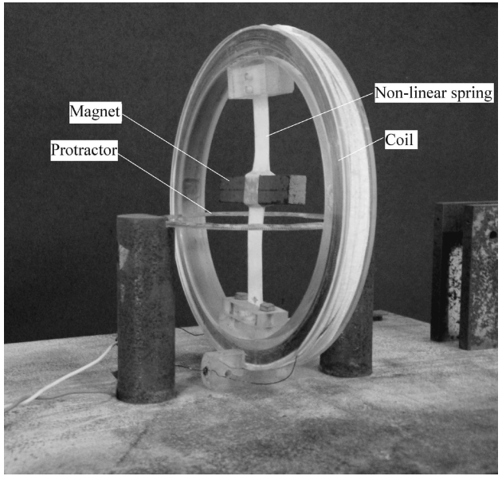

Y22 (2022) — English translation
\textbf{In this problem, there is no need to estimate errors!} The PE2 program answers this problem. Problems about vibrations are easy to solve analytically if they are described by linear equations. Finding nonlinear corrections is much more difficult. In this problem we study them numerically. For experimental observation of nonlinear oscillations, the following setup can be used. A magnetic bar is fixed in the center of the elastic rope, the moment of inertia of which is $I = 5 \cdot 10^{-5}~\text{кг} \cdot \text{м}^2$. When the block deviates from equilibrium by an angle $x$ (in radians), it is acted upon by a restoring moment of force $M(x) = k_1 x + k_3 x^3$, where $k_1 = 6 \cdot 10^{-2} ~\text{Н} \cdot \text{м}$, $k_3 = 4 \cdot 10^{-2}~\text{Н} \cdot \text{м}$. To excite oscillations, the bar can be exposed to a magnetic field, which is created by coils with current (see figure).

In this problem we will study vibrations by numerically solving the corresponding differential equations. A program has been provided for you to do this. In it you can set the equation parameters and initial conditions. When you click on the "Build a numerical solution" button, it will display a graph of the solution - the dependence of the coordinate on time for the corresponding part of the problem. Individual sections of this graph can be enlarged (to do this, click on the button under the graph with a magnifying glass and the pop-up inscription Zoom to Rectangle, and then select the desired section of the graph) in order to read the values with the required accuracy. Return to the previous view of the graph, click on the arrow (<-), and if this does not work, build the numerical solution again.
Numerical data can be entered into the program using the windows on the right. A block common to all parts allows you to set the initial value of the coordinate ($x_0$) and its time derivative (velocity $v_0$). In addition, you can specify the total time $T$ (in seconds) at which the solution is determined (then the solution will be found on the time interval $0< t \textbf{Next in this part we will explore the equation written above with the parameters you found!} Let now the magnetic bar be acted upon by an external moment of force, the amplitude of which is specified by the parameter $f$, frequency $\Omega$. Then the equation of motion will look like: $$ \ddot{x} + 2 \gamma \dot {x}+ \omega_0^2 x + \varepsilon x^3 = f \cos \Omega t $$ Здесь мы учитываем еще и вязкое трение, величина которого задается постоянной $\gamma$. В этой части вам неизвестны значения параметров $\omega_0$, $\gamma$ и $\varepsilon$, но вы можете регулировать амплитуду $f$ and the frequency of the applied external torque, as well as the initial conditions. Let us assume that the resulting steady-state oscillation can be described with reasonable accuracy by the function $$ x(t) = A \cos (\Omega t + \varphi). $$ Тогда величину $\varphi$ будем называть сдвигом фаз колебаний (по отношению к внешнему воздействию). Не ограничивая общности можно считать, что $- \pi < \varphi \leq \pi$. When the amplitude of the external moment of forces $f$ is large enough, nonlinear terms become significant. Because of this, in the region near resonance, one set of parameters $f$, $\Omega$ may correspond to several values of the oscillation amplitude. The steady-state oscillation that actually settles depends on the initial conditions. This is analogous to the phenomenon of hysteresis in magnetism. Consider oscillations for which the frequency varies slightly with time (that is, $\mu \ll 1$), they are described by the equation $$ \ddot{x} +\omega_0^2 (1 + \mu \cos \Omega t)x = 0. $$ При определенных значениях $\mu$ и $\Omega$ амплитуда колебаний будет экспоненциально расти, при каких-то оставаться ограниченной. Используйте в этой части численное значение $\omega_0 = 20 ~\text{c}^{-1}$. До пункта C5 считайте, что трения и нелинейности нет ($\varepsilon = 0$, $\gamma = 0$ in the equation parameters in the program). In the resonance region, in the linear approximation, the amplitude of oscillations increases without limit. Therefore, the amplitude of steady-state oscillations is determined by nonlinear terms, and we need to consider the complete equation $$ \ddot{x} +2 \gamma \dot{x} + \omega_0^2 (1 + \mu \cos \Omega t)x + \varepsilon x^3 = 0. $$ A mathematical pendulum is a weight attached to a weightless rod. The rod can rotate freely around a certain axis. A certain constant moment of force is applied to the pendulum. Then the angle of deviation of the pendulum from equilibrium $x$ satisfies the equation $$ \ddot{x} + 2 \gamma \dot{x} + \omega_0^2 \sin x = f. $$ Здесь $\omega_0 = 20 \text{s}^{-1}$ – частота малых колебаний, а величина $f$ пропорциональна моменту внешних сил. При достаточно больших значениях $\gamma$ a mode of motion is possible in which the pendulum rotates with a constant average angular velocity. Source: https://pho.rs/p/1929Part A. Free vibrations (4 points)
Part B. Forced vibrations (3.5 points)
Part C. Parametric vibrations (4.5 points)
Part D. Pendulum with viscous friction (1 point)